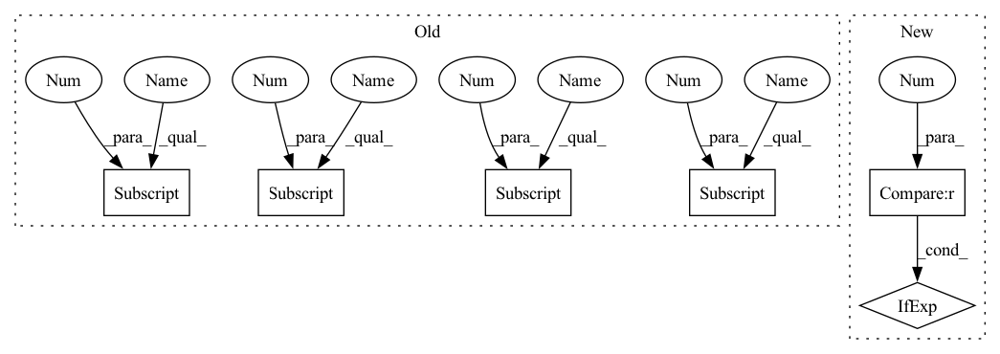

Pattern ID :14795
Before Change
self.box2d = np.array((float(label[4]), float(label[5]), float(
label[6]), float(label[7])),
dtype=np.float32)
self.h = float(label[8] )
self.w = float(label[9] )
self.l = float(label[10])
self.loc = np.array(
(float(label[11] ), float(label[12] ), float(label[13])),
dtype=np.float32)
self.dis_to_cam = np.linalg.norm(self.loc)
self.ry = float(label[14])After Change
def __init__(self, center, front, up, left, size, label):
label_class = self.cls_type_to_id(label[0])
confidence = float(label[15]) if label.__len__() == 16 else -1.0
super().__init__(center, front, up, left, size, label_class, confidence)
In pattern: SUPERPATTERN
Frequency: 3
Non-data size: 6
Instances Fragment ID: 48724518
Project Name: isl-org/open3d-ml
Commit Name: c1313708ab78a2b10cdfe1daf8cf08b9cfc537c5
Time: 2020-11-20
Author: sanskaragrawal107@gmail.com
File Name: ml3d/datasets/waymo.py
M Class Name: Object3d
N Class Name: Object3d
M Method Name: __init__(7)
N Method Name: __init__(2)
M Parent Class: BoundingBox3D
N Parent Class: object
M File Name: ml3d/datasets/waymo.py
N File Name: ml3d/datasets/waymo.py
M Start Line: 202
M End Line: 224
N Start Line: 227
N End Line: 234
Before Change
correct_stitches = 0
// compare stitches
for detected in stitch_list:
for actual in gt_stitches[pattern_idx]:
// order-invariant comparison of stitch sides
if (all(detected[0] == actual[0]) and all(detected[1] == actual[1])) \
or (all(detected[1] == actual[0]) and all(detected[0] == actual[1])):
correct_stitches += 1
// precision -- how many of the detected stitches are actually thereAfter Change
tot_recall = 0
for pattern_idx in range(stitch_tags.shape[0]):
stitch_list = PatternDataset.tags_to_stitches(stitch_tags[pattern_idx]).to(gt_stitches.device)
num_detected_stitches = stitch_list.shape[1] if stitch_list.numel() > 0 else 0
if not num_detected_stitches: // no stitches detected -- zero recall & precision
continue
num_actual_stitches = gt_stitches[pattern_idx].shape[-1] Fragment ID: 48724438
Project Name: maria-korosteleva/garment-pattern-estimation
Commit Name: 2c10fe34bdc71a0db2ced1efad3afb7a62bd3b25
Time: 2020-11-02
Author: mariako@kaist.ac.kr
File Name: nn/metrics.py
M Class Name: PatternStitchPrecisionRecall
N Class Name: PatternStitchPrecisionRecall
M Method Name: __call__(3)
N Method Name: __call__(3)
M Parent Class:
N Parent Class:
M File Name: nn/metrics.py
N File Name: nn/metrics.py
M Start Line: 145
M End Line: 163
N Start Line: 182
N End Line: 201
Before Change
if cur_mode in ["mixup", "cutmix", "saliencymix"]:
img, gt_label = eval(cur_mode)(img, gt_label, cur_alpha, dist_mode=False)
if self.mix_reverse: // (y_a, y_b, lam)
gt_label = (gt_label[1], gt_label[0] , gt_label[2] )
elif cur_mode in ["resizemix", "fmix"]:
mix_args = dict(alpha=cur_alpha, dist_mode=False, **self.mix_args[cur_mode])
img, gt_label = eval(cur_mode)(img, gt_label, **mix_args)
if self.mix_reverse: // (y_a, y_b, lam)
gt_label = (gt_label[1] , gt_label[0] , gt_label[2])
else:
assert cur_mode == "vanilla"
x = self.backbone(img)After Change
// save mixed img
if self.save:
plot_lam = gt_label[2] if len(gt_label) == 3 else None
self.plot_mix(img_mixed=img, mix_mode=cur_mode, lam=plot_lam)
// mixup loss
outs = self.head(x) Fragment ID: 48724517
Project Name: westlake-ai/openmixup
Commit Name: e81ed8596e22d5302cd67bbbc98ec59f1ea1bcf6
Time: 2022-03-10
Author: 1070535169@qq.com
File Name: openmixup/models/classifiers/mixup_classification.py
M Class Name: MixUpClassification
N Class Name: MixUpClassification
M Method Name: forward_mix(4)
N Method Name: forward_mix(4)
M Parent Class: nn.Module
N Parent Class: nn.Module
M File Name: openmixup/models/classifiers/mixup_classification.py
N File Name: openmixup/models/classifiers/mixup_classification.py
M Start Line: 148
M End Line: 171
N Start Line: 244
N End Line: 280
Before Change
def __init__(self, line):
label = line.strip().split(" ")
self.src = line
self.cls_type = label[0]
self.cls_id = self.cls_type_to_id(self.cls_type)
self.truncation = float(label[1])
self.occlusion = float(
label[2]
) // 0:fully visible 1:partly occluded 2:largely occluded 3:unknown
self.alpha = float(label[3])
self.box2d = np.array((float(label[4]), float(label[5]), float(
label[6]), float(label[7])),
dtype=np.float32)
self.h = float(label[8] )
self.w = float(label[9])
self.l = float(label[10])
self.loc = np.array(
(float(label[11] ), float(label[12] ), float(label[13] )),
dtype=np.float32)
self.dis_to_cam = np.linalg.norm(self.loc)
self.ry = float(label[14])After Change
def __init__(self, center, front, up, left, size, label):
label_class = self.cls_type_to_id(label[0])
confidence = float(label[15]) if label.__len__() == 16 else -1.0
super().__init__(center, front, up, left, size, label_class, confidence)
Fragment ID: 48724514
Project Name: isl-org/open3d-ml
Commit Name: c1313708ab78a2b10cdfe1daf8cf08b9cfc537c5
Time: 2020-11-20
Author: sanskaragrawal107@gmail.com
File Name: ml3d/datasets/waymo.py
M Class Name: Object3d
N Class Name: Object3d
M Method Name: __init__(7)
N Method Name: __init__(2)
M Parent Class: BoundingBox3D
N Parent Class: object
M File Name: ml3d/datasets/waymo.py
N File Name: ml3d/datasets/waymo.py
M Start Line: 202
M End Line: 224
N Start Line: 227
N End Line: 234